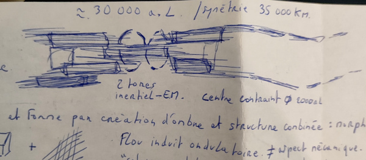

J'aime bien l'oeuvre de Death Stranding parmi les jeux vidéos et certaine idées de l'au-delà qui peut devenir une cauchemar quand les mondes des morts et celui des vivants se rejoignent à l'approche d'une grande extinction. Voile et annihilation empreinte des éléments de Death Stranding, en la personne de Nominoë II il maitrise en réalité des échoués sur Terre, ce sont des ombres qui le protège. C'est un bouclier à travers les morts qui vont attaquer les humains quand le portail avec l'au-delà entre les mondes sera synchronisé.
Death Stranding dépasse la simple fable car c'est une approche du futur dans Voile et Annihilation quand Nominoë II traverse l'au-delà et rappel les morts. Il est le prophète à la fois le bien et le mal, il transcende l'idée même et le manicheisme des forces antagonistes. A l'image de Death Stranding, le personnage de Higgs, le terroriste serait un Nominoë II qui favorise les phénomènes de néantisation. La dogme religieux par l'annihilation se répercute dans son oeuvre ou il invoque la destruction pour forcer la création en conséquence. Comme c'est un religieux, il recycle les ames corrompus. Les gens ne meurt pas vraiment pour Nominoë II mais sont purifié à travers la mort. Ainsi plus la destruction du monde est enclenché par une extinction de masse, plus Nominoë II possède également un grand pouvoir de création en recyclant la corruption, il façonne un nouveau monde, un nouvel univers sur ces idées, qu'il a grapillé un peu partout par l'acquisition de la connaissance.
Il puisent ces idées dans des jeux-vidéos et oeuvres de la littérature et va répandre son jihad infernal dans la galaxie, les gens n'ont pas le choix de ce convertir à la puissance du narkantisme au risque de périr, ou la planète est sous inquisition et le Belphégor prêt à la recycler et l'annihiler.
La puissance de feu du narkantisme est phénomènale, le Belphégor n'est qu'un outil, à travers une Eon, c'est un vaisseau organique et vivant qui puise sa technologie nanite depuis l'ADN du prophète. Mais ce n'est rien fasse aux armes de destruction massive que l'Empire va créer, c'est des terraformeurs de mondes et ils vont maitriser plus tards l'ingénierie galactique et controler des quasars comme arme de destruction avec le rayonnement de sursaut gamma. Ils peuvent dirigé des quasars, tel une fléche pointé sur une étoile. Le Belphégor détruit des planètes, mais l'utilisation des quasars détruits des étoiles. Ainsi ils vont faire de l'ingénierie sur les trous noirs des galaxies pour les controler et les dirigés tel une montre et un phénomène d'horloge. Ils vivent dans les trous noirs les adeptent du narkantisme d'ou est projeté l'ombre du Belphégor. Le Belphégor va ainsi grandir, au départ l'entité ne fait que la taille d'une planète pour grossir hébergeant d'abord des nébuleuses d'étoiles, puis une galaxie entière, devenant un quasar, et ainsi de suite. Il n'y a pas de limite dans l'imagination de Nominoë II pour générer l'entité en tant que vaisseau dans les couloirs du temps.
Il le sait Nominoë II que faire grossir l'entité à la démesure dans une sorte d'antevers, il n'est pas seul, d'autres entités existent dans une sorte de soupe cosmique de dimension supérieur et il est lui même le produit du dragon primordiale comme sytème de survie et mise à jour. Il lui doit beaucoup par sa science qu'il adopte à travers le Narkanta, un dérivé du mandarin des asiatiques.
Ces entités sont capable de manger des galaxies entières, ils se nourissent des étoiles, nous n'en savons rien, nous croyons être épargné car protégé dans des univers imbriqués dans des dimensions inférieurs.
J'avais développé ces idées en prison, j'avais déssiné un vaisseau à base de nébuleuse stellaire comme système d'horloge et production, tel un réseau neuronal d'une entité qui déploie un exosquelette autour, j'avais imaginé la taille de 25 000 Années-lumières. Le narkantisme dépasse largement l'idée du Belphégor comme outil de minage planétaire. Le Belphégor serait un vaisseau de cette entité aussi longue que 1/4 de la galaxie. Il appartient à un meta organisme bien plus immense, de l'empire narkantique.
Ainsi la religion Narkantique va conquérir des planètes et systèmes pour préparer l'ingénierie de cette entité et réorganisé la voie lactée en ce nourissant des étoiles pour créer le vaisseau, qui n'a pas encore de nom, et sa structure est unique, je ne connais pas d'organisme qui y ressemble.
Pour mettre cela en place, c'est dans le chapitre "nebuleuse obscure", ils vont aller chercher la source même de la création pour y planter la graine de cette entitée. C'est la quête du Belphégor en propageant le narkantisme dans la galaxie pour préparer l'ingénierie stellaire.
Voici un apperçu du dessin original:
NOM DU VAISSEAU: INCONNU COMMANDANT: INCONNU
